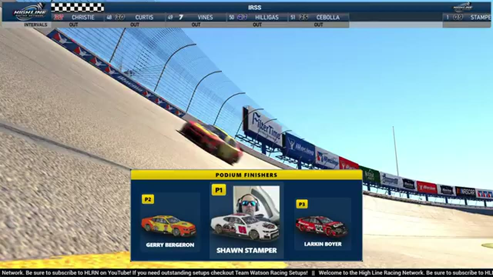

Larkin Boyer
Team assignment not stated in the structured owner record.
A PODIUM FILE WITH AN OPEN RESULT HORIZON
- Official files
- 6
- Central editions
- 3
- Exact tape cues
- 12
- Accepted podiums
- 2
Larkin Boyer has 2 position-specific top-three receipts: S1 R16 at Talladega (P3); S1 R15 at iRacing Superspeedway (P3). No feature win is currently supported in the accepted result ledger. A consistently stated team affiliation remains open for owner review. The currently indexed source window runs from February 19, 2026 through July 20, 2026.
The official tape index connects the name to 6 race files, 3 Central editions, and 12 primary-broadcast navigation cues. The densest direct-tape categories are feature (3 cues) and restart (3 cues). Those counts describe where the name is easiest to find; they are not fault, pace, or performance grades. A source-attributed car frame is published with its original video and timestamp. That is the current discovery map for Larkin Boyer.
That is enough for a real result dossier without pretending the archive knows every start or finish. Owner classifications can extend the record later through the same stable race IDs. Separately, 12 Highline Live files sit on the bonus shelf and never enter the official season ledger. The displayed name is labeled broadcast lower third confirmed; that status remains visible so an owner roster can strengthen or correct the identity without rewriting the evidence trail. Those boundaries define Larkin Boyer's public HLRN file.
10 featured race-tape cues
These are discovery routes into complete HLRN broadcasts, not performance grades or inferred results.
- S1 / R16 · RESULT
David Applegate is confirmed atop the Talladega results
The finale broadcast corrects its first post-race call after Trevor Haley's disqualification, identifying David Applegate as the winner, Brandon Taylor second, and Larkin Boyer third.
Talladega - S1 / R15 · RESULT
Shawn Stamper is confirmed atop the iRacing Superspeedway results
The primary broadcast's podium readout records Shawn Stamper, Jerry Bergeron, and Larkin Boyer at iRacing Superspeedway.
iRacing Superspeedway - S1 / R15 · FINISH
Shawn Stamper survives the extra lap at iRacing Superspeedway
The booth first thinks the race is over, catches the extra lap, and stays with Shawn Stamper as he holds the lead through the final wreck and receives the corrected live winner call.
iRacing Superspeedway - S1 / R15 · BATTLE
The iRacing Superspeedway lead pack goes four wide
S1 / R15 at 46:09: The iRacing Superspeedway pack compresses four wide while Donald Stewart, Jerry Bergeron, and Larkin Boyer are named on the call. The chapter keeps the live battle intact and makes no finishing-order claim.
iRacing Superspeedway - S1 / R15 · BATTLE
The iRacing Superspeedway lead pack goes three wide
S1 / R15 at 2:16:46: The iRacing Superspeedway pack compresses three wide while Brian Hebert, Larkin Boyer, and Shawn Stamper are named on the call. The chapter keeps the live battle intact and makes no finishing-order claim.
iRacing Superspeedway - S2 / R4 · RESTART
The EchoPark field takes the opening green after its memorial drive-by
Following a postponed start and the field's David Boyer drive-by, Bryce Hinton and Vincent Guerrero lead the actual memorial race to green. Cody Neagles and Larkin Boyer settle into the opening top three.
EchoPark Speedway - S1 / R16 · RESTART
The Season 1 finale takes Talladega's opening green
S1 / R16 at 36:26: The official Talladega race broadcast reaches the opening green, with Nick Bowman and Larkin Boyer among the first drivers named. This cut begins before the launch and stays with the first live-race call.
Talladega - S1 / R15 · RESTART
Larkin Boyer leads the championship-week IRSS opening green
S1 / R15 at 37:13: The official iRacing Superspeedway race broadcast reaches the opening green, with Larkin Boyer among the first drivers named. This cut begins before the launch and stays with the first live-race call.
iRacing Superspeedway - S2 / R4 · INCIDENT
A late return to the racing line triggers EchoPark's next pileup
HLRN reviews a driver washing through the quad oval and coming back down across the No. 8's nose after surrendering the lane. The contact starts a massive wreck; the transcript does not safely identify the first car.
EchoPark Speedway - S2 / R4 · FEATURE
David Boyer's keys define the EchoPark memorial race
Larkin Boyer shares the principles his father brought to racing: set a goal, win on pit road, know the fuel and tire count, and finish what you started. HLRN presents the keys as the memorial's pre-race frame, not live pit strategy.
EchoPark Speedway
Recent editions connected to Larkin Boyer
Rowe Wins the Memorial in the Wreckage
Vincent Guerrero took the stage, Craig Rowe took the last-lap lead, and the David Boyer Memorial ended after 18 reported cautions.
S1 / R16Applegate Wins After Haley's DQ
Trevor Haley reached the stripe first, but HLRN's review removed the No. 12 for a below-yellow-line advance and contact, elevating David Applegate.
S1 / R15Stamper Survives the Final Reset
Three green-white-checkered attempts, a last restart, and one premature call later, Shawn Stamper finally crossed as the winner.
Verified team history is not consistently stated. Complete starts, finishes, and points remain open beyond the recovered results. The public spelling has broadcast identity support; an owner roster can still add legal-name, number, and team-history detail.